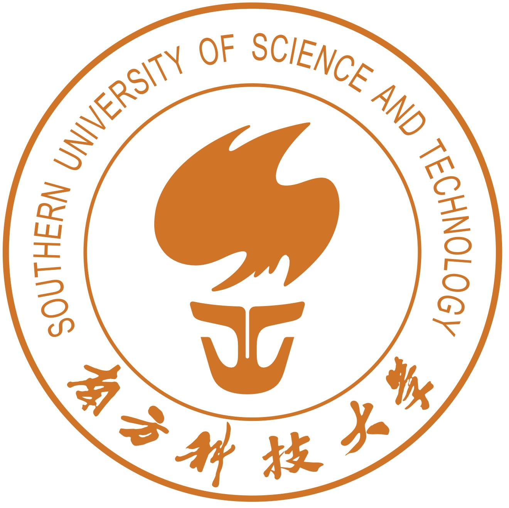

副研究员（助理教授），博导
Tenure-Track Assistant Professor, Ph.D Supervisor
Department of Computer Science and Engineering
Southern University of Science and Technology
Office: Room 311, South Tower, College of Engineering
Address: No. 1088 Xueyuan Avenue, Shenzhen 518055, China
Email: liusc3 AT sustech DOT edu DOT cn

Short Biography
I received my B.Sc. and Ph.D. degrees in the School of Computer Science and Technology from USTC in 2014 and 2020, respectively, advised by Prof. Xin Yao and Prof. Ke Tang. From Jan 2021 to Jan 2023, I was a Research Assistant Professor at the CSE Department of SUSTech. From Jan 2023 to May 2024, I was a Visiting Professor, and later a senior scientist, at CFAR, A*STAR, Singapore, in collaboration with Prof. Yew-Soon Ong from NTU. Since 2026, I have served as an Associate Editor of the IEEE Transactions on Emerging Topics in Computational Intelligence (IEEE TETCI). I am also a member of the NICAL lab.
个人简介
刘晟材博士，分别在2014年和2020年于中国科学技术大学计算机学院获得学士和博士学位。曾在新加坡科技研究局担任高级研究科学家，现任南方科技大学计算机科学与工程系助理教授、博导，北京中关村学院兼职博导，并担任 IEEE TETCI 副编。长期从事学习优化 (Learn to optimize)、大模型（LLM）/ 智能体（Agents）及其在计算代码优化、科学领域的应用研究。已获批主持国自然基金一项、华为合作项目两项，迄今已在NeurIPS、ICML、AAAI等CCF-A类会议以及IEEE TPAMI、TEVC等人工智能旗舰期刊上以一作/通讯作者身份发表论文20余篇。刘博士曾多次受邀在国际学术会议上做大会报告，包括达格施图尔城堡研讨会2023、IEEE世界计算智能大会2022、以及第七届演化计算与学习研讨会。
LLM/Agent (Post-Training) for Computing Code Optimization
LLM/Agent Scientific Applications in Quantum and Material
招募: 本课题组常年招收硕士/博士研究生、访问学生、博士后、研究助理教授，不定时招收北京中关村学院-南方科技大学联合培养博士生。 欢迎数理基础扎实、代码能力强的同学申请。申请时请将本人自述、成绩单、个人简历及相关能力发送至邮箱 liusc3 AT sustech.edu.cn 以及 chengy6 AT mail.sustech.edu.cn，邮件主题请注明为 申请人姓名+申请xx职位/xxx年入学博士生/硕士生. 【由于申请邮件数量较多，恕无法逐一回复。】
Recruitment: We have open positions for M.Sc./Ph.D. students, Visiting Scholars, Postdocs, and Research Assistant Professors. Candidates with strong backgrounds in mathematics and programming are highly encouraged to apply. To Apply: Please email your CV, transcripts, and personal statement to liusc3 AT sustech.edu.cn and chengy6 AT mail.sustech.edu.cn. Subject Line: Name + Position Applied / Intake Year. [Due to the large volume of applications, I am unable to reply to every email.]
多特性弧路径规划问题的求解方法研究,
国家自然科学基金青年科学基金项目（C类）,
2026/01-2028/12,
PI
大模型RL微调的XXX技术,
华为技术有限公司,
2025/10-2026/10,
PI
XXX求解器的自动构建关键方法,
华为技术有限公司,
2021/05-2022/05,
PI
Selected Publications
(First/corresponding-authored works listed; * indicates corresponding author; See Google Scholar for the complete list.)
Filter by:YearTopic
Preprints
Shaofeng Zhang, Shengcai Liu*, Zhiyuan Wang, Ke Tang*.Evolving Parallel Algorithm Portfolios via Potential-Aware Instance Generation with LLMs.arXiv preprint arXiv:2608.06808. [Arxiv]L2OLLM/Agent
Haoze Lv, Ning Lu, Shengcai Liu*, Shaofeng Zhang, Ke Tang.MuEvo: LLM-Driven Evolution of Multi-Heuristic Ensemble.arXiv preprint arXiv:2608.03636. [Arxiv]L2OLLM/Agent
Tianhang Lu, Runtian Ren, Shengcai Liu*.Online Multi-Level Aggregation with Per-Batch Maximum Delay.arXiv preprint arXiv:2608.06796. [Arxiv]L2O
Tianhang Lu, Runtian Ren, Shengcai Liu*, Ke Tang.Learning-Augmented and Randomized Algorithms for Line Aggregation with Delays.arXiv preprint arXiv:2607.27807. [Arxiv]L2O
Jiahao Wu, Ning Lu, Shengcai Liu*, Kun Wang, Yanting Yang, Bailong Lin, Chen Jason Zhang, Li Qing, Ke Tang.Train at Moving Edge: Online-Verified Prompt Selection for Efficient RL Training of Large Reasoning Models.arXiv preprint arXiv:2603.25184. [Arxiv]LLM/Agent
Journal Papers
Shengcai Liu and Ke Tang.From general problem solver to scalable agentic problem solver.AI Plus (Commentary), 1: 100009, September 30, 2026. [DOI]
Wenjie Chen, Li Zhuang, Ziying Luo, Yu Liu, Jiahao Wu, Shengcai Liu*.Personalized Treatment Outcome Prediction from Scarce Data via Dual-Channel Knowledge Distillation and Adaptive Fusion.IEEE Transactions on Emerging Topics in Computational Intelligence, 2026, To appear. [Arxiv]Applications
Shengcai Liu, Zhiyuan Wang, Yew-Soon Ong, Xin Yao, and Ke Tang.MEGO: Learning Mixture-of-Experts for General-Purpose Binary Optimization.IEEE Transactions on Pattern Analysis and Machine Intelligence, 2026, To appear. [Arxiv]L2O
Qingya Li, Shengcai Liu*, Juan Zou, and Ke Tang.A novel dual-stage algorithm for capacitated arc routing problems with time-dependent service costs.Memetic Computing, 2026, 18(3): 33. [Paper][Arxiv]Applications
Rui Xu, Xing Fan, Shengcai Liu*, Wenjie Chen, Ke Tang.Memetic Search for Green Vehicle Routing Problem with Private Capacitated Refueling Stations.IEEE Transactions on Evolutionary Computation, 2025, To appear. [Paper][Arxiv][Code]Applications
Zhiyuan Wang, Shengcai Liu*, Peng Yang, and Ke Tang*.Evolving Generalizable Parallel Algorithm Portfolios for Binary Optimization Problems via Domain-Agnostic Instance Generation.IEEE Transactions on Evolutionary Computation, 2025, To appear. [Paper][Arxiv][Code]L2O
Wenjie Chen, Shengcai Liu*, Yew-Soon Ong, Li Zhuang, and Ke Tang.Neural Influence Estimator: Towards Real-time Solutions to Influence Blocking Maximization.IEEE Transactions on Computational Social Systems, 2025, 12(6): 5155-5167. [Paper][Arxiv]L2OApplications
Zubin Zheng, Shengcai Liu*, and Yew-Soon Ong.Hybrid Memetic Search for Electric Vehicle Routing with Time Windows, Simultaneous Pickup-Delivery, and Partial Recharges.IEEE Transactions on Emerging Topics in Computational Intelligence, 2025, 9(6): 3773-3787. [Paper][Arxiv][Code]Applications
Jiahao Wu, Wenqi Fan, Jingfan Chen, Shengcai Liu*, Qijiong Liu, Rui He, Qing Li, and Ke Tang.Condensing Pre-augmented Recommendation Data via Lightweight Policy Gradient Estimation.IEEE Transactions on Knowledge and Data Engineering, 2025, 37(1): 162 - 173. [Paper][Arxiv][Code]L2OApplications
Xuanfeng Li, Shengcai Liu*, and Ke Tang.Novel Genetic Algorithm for Solving Chance-Constrained Multiple-Choice Knapsack Problems.Journal of Computer Applications, 2024, 44(5): 1378-1385. [Paper]Applications
Xuanfeng Li, Shengcai Liu*, Jin Wang, Xiao Chen, Yew-Soon Ong, and Ke Tang.Chance-Constrained Multiple-Choice Knapsack Problem: Model, Algorithms, and Applications.IEEE Transactions on Cybernetics, 2024, 54(12): 7969 - 7980. [Paper][Arxiv][Code]L2OApplications
Ning Lu, Shengcai Liu*, Rui He, Qi Wang, Yew-Soon Ong, and Ke Tang.Large Language Models can be Guided to Evade AI-Generated Text Detection.Transactions on Machine Learning Research, 2024. [Paper][Arxiv][Code]LLM/Agent
Shengcai Liu, Ning Lu, Wenjing Hong, Chao Qian, and Ke Tang.Effective and Imperceptible Adversarial Textual Attack via Multi-objectivization.ACM Transactions on Evolutionary Learning and Optimization, 2024, 4(3): 16:1-16:23. [Paper][Arxiv][Code]Applications
Shengcai Liu, Yu Zhang, Ke Tang, and Xin Yao.How Good Is Neural Combinatorial Optimization? A Systematic Evaluation on the Traveling Salesman Problem.IEEE Computational Intelligence Magazine, 2023, 18(3): 14-28. [Paper][Arxiv][Code]L2O
Zeyu Dai, Shengcai Liu*, Qing Li, and Ke Tang.Saliency Attack: Towards Imperceptible Black-box Adversarial Attack.ACM Transactions on Intelligent Systems and Technology, 2023, 14(3): 1-20. [Paper][Arxiv][Code]Applications
Rui He, Shengcai Liu*, Shan He, and Ke Tang.Multi-Domain Active Learning: Literature Review and Comparative Study.IEEE Transactions on Emerging Topics in Computational Intelligence, 2023, 7(3): 791-804. [Paper][Arxiv]Applications
Shengcai Liu, Ning Lu, Cheng Chen, and Ke Tang.Efficient Combinatorial Optimization for Word-level Adversarial Textual Attack.IEEE/ACM Transactions on Audio, Speech and Language Processing, 2022, 30: 98-111. [Paper][Arxiv][Code]Applications
Shengcai Liu, Peng Yang, and Ke Tang.Approximately Optimal Construction of Parallel Algorithm Portfolios by Evolutionary Intelligence (in Chinese).SCIENTIA SINICA Technologica, 2023, 53(2): 280-290. [Paper]L2O
Shengcai Liu, Ke Tang, and Xin Yao.Generative Adversarial Construction of Parallel Portfolios.IEEE Transactions on Cybernetics, 2022, 52(2): 784-795. [Paper]L2O
Shengcai Liu, Ke Tang, and Xin Yao.Memetic Search for Vehicle Routing with Simultaneous Pickup-Delivery and Time Windows.Swarm and Evolutionary Computation, 66: 100927, 2021. [Paper][Arxiv][Code]Applications
Shengcai Liu, Ke Tang, Peng Yang, and Xin Yao.Few-shots Parallel Algorithm Portfolio Construction via Co-evolution.IEEE Transactions on Evolutionary Computation, 2021, 25(3): 595-607. [Paper][Arxiv][Code]L2O
Conference Papers
Ning Lu, Baijiong Lin, Shengcai Liu*, Jiahao Wu, Haoze Lv, Yanbin Wei, Lingting Zhu, Shengju Qian, Xin Wang, Ying-Cong Chen, Qi Wang, Ke Tang.Policy and World Modeling Co-Training for Language Agents.In: Proceedings of the 2026 Conference on Empirical Methods in Natural Language Processing (EMNLP'2026), Budapest, Hungary, Oct 25 - 27, 2026, To appear. [Arxiv]LLM/Agent
Jiyu Luo, Shaoyu Chen, Jingwei Sun*, Shengcai Liu*, Ke Tang, Guangzhong Sun*.EMO: Energy Efficiency Modeling and Optimization for AI Workloads.In: Proceedings of The International Conference for High Performance Computing, Networking, Storage, and Analysis (SC'2026), Chicago, IL, Nov 15 - 20, 2026, To appear. [Arxiv]L2OLLM/Agent
Zubin Zheng, Jiahao Wu, Shengcai Liu*.Neural QAOA2: Differentiable Joint Graph Partitioning and Parameter Initialization for Quantum Combinatorial Optimization.In: Proceedings of the 43rd International Conference on Machine Learning (ICML'2026), Seoul, South Korea, Jul 6 - 11, 2026. [Paper][Arxiv]L2OQuantum
Zhangying Feng, Qianglong Chen, Ning Lu, Yongqian Li, Siqi Cheng, Shuangmu Peng, Duyu Tang, Shengcai Liu*, Zhirui Zhang*.Is PRM Necessary? Problem-Solving RL Implicitly Induces PRM Capability in LLMs.In: Proceedings of the 39th Annual Conference on Neural Information Processing Systems (NeurIPS'2025), San Diego, CA, Nov 30 - Dec 7, 2025. [Paper][Arxiv]LLM/Agent
Haoze Lv, Zhiyuan Wang, Wenjie Chen, Shengcai Liu*.Cascaded Large-Scale TSP Solving with Unified Neural Guidance: Bridging Local and Population-based Search.In: Proceedings of the 28th European Conference on Artificial Intelligence (ECAI'2025), Bologna, Italy, Oct 25 - 30, 2025, 4961-4968. [Paper][Arxiv]L2OApplications
Ning Lu, Shengcai Liu*, Jiahao Wu, Weiyu Chen, Zhirui Zhang, Yew-Soon Ong, Qi Wang, Ke Tang.Safe Delta: Consistently Preserving Safety when Fine-Tuning LLMs on Diverse Datasets.In: Proceedings of the 42nd International Conference on Machine Learning (ICML'2025), Vancouver, Canada, Jul 13 - 19, 2025. [Paper][Arxiv][Code]LLM/Agent
Jiahao Wu, Ning Lu, Zeiyu Dai, Wenqi Fan, Shengcai Liu*, Qing Li, Ke Tang.Backdoor Graph Condensation.In: Proceedings of The 40th IEEE International Conference on Data Engineering (ICDE'2025), HongKong, China, May 19 - 23, 2025, 2267-2280. [Paper][Arxiv][Code]Applications
Jiahao Wu, Qujiong Liu, Hengchang Hu, Wenqi Fan, Shengcai Liu*, Qing Li, Xiao-Ming Wu, Ke Tang.Leveraging ChatGPT to Empower Training-free Dataset Condensation for Content based Recommendation.In: Companion Proceedings of the ACM on Web Conference 2025 (WWW'2025), Sydney, Australia, Apr 28 - May 2, 2025, 1402-1406. [Paper][Arxiv][Code]LLM/AgentApplications
Ning Lu, Shengcai Liu*, Zhirui Zhang, Qi Wang, Haifeng Liu, and Ke Tang.Less is More: Understanding Word-level Textual Adversarial Attack via n-gram Frequency Descend.In: Proceedings of The 2024 IEEE Conference on Artificial Intelligence (CAI'2024), Singapore, Singapore, Jun 25 - 27, 2024, 823-830. [Paper][Arxiv]Applications
Shengcai Liu, Caishun Chen, Xinghua Qu, Ke Tang, and Yew-Soon Ong.Large Language Models as Evolutionary Optimizers.In: Proceedings of The 2024 IEEE Congress on Evolutionary Computation (CEC'2024), Yokohama, Japan, Jun 30 - Jul 5, 2024, 1-8. [Paper][Arxiv][Code]L2OLLM/Agent
Rui He, Shengcai Liu*, Jiahao Wu, Shan He, and Ke Tang.Multi-Domain Learning From Insufficient Annotations.In: Proceedings of The 26th European Conference on Artificial Intelligence (ECAI'2023), Kraków, Poland, Sep 30 - Oct 4, 2023, 1028-1035. [Paper][Arxiv]Applications
Shengcai Liu, Fu Peng, and Ke Tang.Reliable Robustness Evaluation via Automatically Constructed Attack Ensembles.In: Proceedings of The 37th AAAI Conference on Artificial Intelligence (AAAI'2023), Washington, DC, Feb 7 - 14, 2023, 8852-8860. [Paper][Arxiv][Code]L2OApplications
Fu Peng, Shengcai Liu*, and Ke Tang.Training Quantized Deep Neural Networks via Cooperative Coevolution.In: Proceedings of the 13th International Conference on Swarm Intelligence (ICSI'2022), Xi'an, China, Jul 15 - 19, 2022, 81-93. [Paper]Applications
Kangfei Zhao, Shengcai Liu*, Yu Rong, and Jeffrey Xu Yu.Towards Feature-free TSP Solver Selection: A Deep Learning Approach.In: Proceedings of the 20th International Joint Conference on Neural Networks (IJCNN'2021), Virtual Event, Jul 18 - 22, 2021, 1-8. [Paper][Arxiv][Code]L2O
Shengcai Liu, Ke Tang, and Xin Yao.On Performance Estimation in Automatic Algorithm Configuration.In: Proceedings of The 34th AAAI Conference on Artificial Intelligence (AAAI'2020), New York, NY, Feb 7 - 12, 2020, 2384-2391. [Paper]L2O
Shengcai Liu, Ke Tang, and Xin Yao.Automatic Construction of Parallel Portfolios via Explicit Instance Grouping.In: Proceedings of The 33rd AAAI Conference on Artificial Intelligence (AAAI'2019), Honululu, HI, Jan 27 - Feb 1, 2019, 1560-1567. [Paper]L2O
Professional Activities
Academic Participation:
Associate Editor, IEEE Transactions on Emerging Topics in Computational Intelligence (2026-)
北京中关村学院兼职导师 (2025-)
IEEE Member (2019-)
IEEE Computational Intelligence Society (CIS) Member: 2023-
Invited Talks:
“Algorithm Space Distillation - A Perspective for Automated Algorithm Design”, 第十二届演化计算与学习研讨会 (The 12th Workshop on Evolutionary Computation and Learning, ECOLE’2026), 2026年8月17日, 南京.
“Learn to Optimize - An Algorithm Space Distillation Perspective”, 计算智能与学习优化交流会, 2026年6月29日, 北京航空航天大学.
“Some Preliminary Attempts on LLM-Driven Optimization and Optimization for LLMs”, 第4届智能决策论坛, 2025年6月15日, 南京.
“迈向通用离散优化智能体”, 第20次南澳科学会议, 2025年4月27日, 汕头.
“Large Language Models as General-Purpose Evolutionary Optimizers”, 2024 Workshop on Learning-to-Optimize Paradigms in the Era of LLMs, 2024年12月3日, 深圳华为.
“How Good is Neural Combinatorial Optimization?”, Dagstuhl Seminar “Synergizing Theory and Practice of Automated Algorithm Design for Optimization”. Aug 17, 2023. Dagstuhl, Germany.
“Learn to Optimize”, The 2022 IEEE World Congress on Computational Intelligence (WCCI’2022). Jul 18, 2022. [Slides], Online.
“Co-Evolved Parallel Algorithm Portfolios”, 第七届演化计算与学习研讨会 (The 7th Workshop on Evolutionary Computation and Learning, ECOLE’2021), 2021年5月15日, 武汉.
People & Alumni
Postdoctoral Researchers
Zhiyuan Huang 黄致远 (Ph.D. in Materials Science, Northwestern Polytechnical University)
PhD Students
2026 - : Zheyu Zhang 张哲语
2025 - : Jinglin Wang 王靖林
2025 - : Haoze Lv 吕昊泽 (joint Ph.D. program with Beijing Zhongguancun Academy)
Master Students
2026 - : Shuqi Yuan 袁书起
2026 - : Linran Zhong 钟林然
2025 - : Zubin Zheng 郑祖彬
2025 - : Zhucai Duan 段柱材 (joint M.Sc. program with Ping An Technology)
Alumni
2021 - 2026: Ning Lu 卢宁, Ph.D. student (co-supervised with Prof. Ke Tang and Prof. Qi Wang). Next position / 去向: Bailing LLM Post-Training Team, Ant Group (Ant Star-Plan A Talent Program) / 蚂蚁集团百灵大模型后训练组（蚂蚁星-PlanA人才计划）
2020 - 2026: Jiahao Wu 吴嘉豪, Ph.D. student (co-supervised with Prof. Ke Tang). Next position / 去向: Postdoctoral Researcher, The Hong Kong Polytechnic University / 香港理工大学博士后
2020 - 2026: Xuanfeng Li 李炫锋, Ph.D. student (co-supervised with Prof. Ke Tang). Next position / 去向: Postdoctoral Researcher, Harbin Institute of Technology, Shenzhen / 哈尔滨工业大学（深圳）博士后
Teaching
CSE5025 - Combinatorial Optimization (组合优化), for graduate students, 2025 Fall, 2026 Fall
CS109 - Introduction to Java Programming, for undergraduate students, 2024 Fall, 2026 Spring